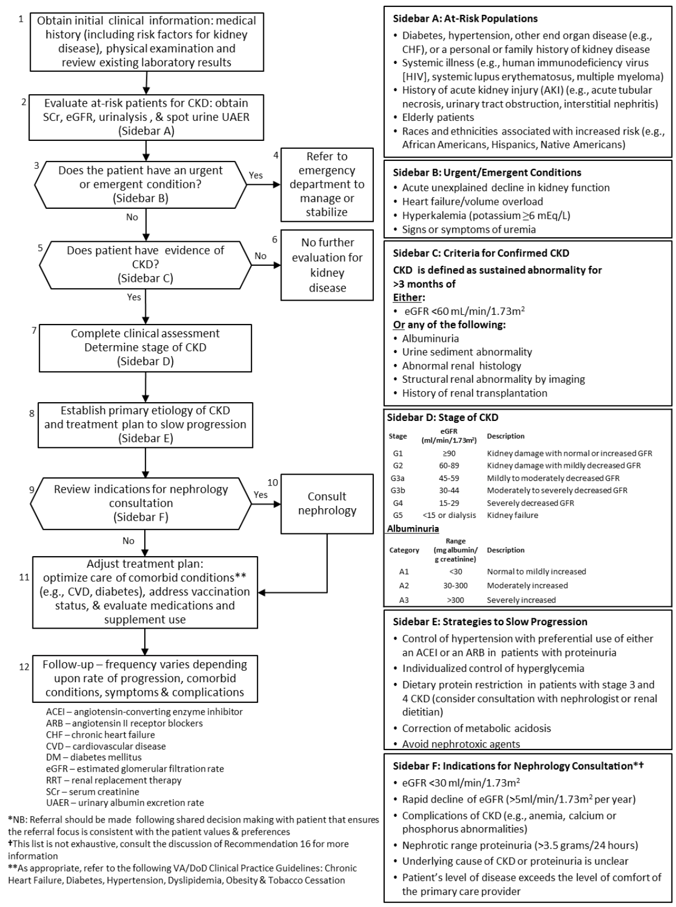

Clinical Practice Guidelines Example Implementation Guide - Chronic Kidney Disease
1.0.0 - ci-build

Clinical Practice Guidelines Example Implementation Guide - Chronic Kidney Disease
1.0.0 - ci-build

Clinical Practice Guidelines Example Implementation Guide - Chronic Kidney Disease - Local Development build (v1.0.0) built by the FHIR (HL7® FHIR® Standard) Build Tools. See the Directory of published versions
| Official URL: http://cqframework.org/cpg-example-ckd/ImplementationGuide/cqframework.cpg-example-ckd | Version: 1.0.0 | |||
| Active as of 2024-11-18 | Computable Name: CPGChronicKidneyDiseaseExamples | |||
The system-wide goal of evidence-based guidelines is to improve the patient’s health and well-being by guiding health providers who are taking care of patients with chronic health conditions along the management pathways that are supported by evidence and are thus considered the highest standard of care. This example focuses on Chronic Kidney Disease, however we expect that this implementation guide will be applicable to management of many other chronic health conditions, e.g. diabetes, hypertension, congestive heart failure, etc.
The expected outcome of successful implementation of this guideline is to:
This clinical use case example is based on the NIH Chronic Kidney Disease (CKD) Care Plan project.
The guidelines described in this example follow a recommended clinical workflow for diagnosis and care management. The steps in this workflow will be harmonized with other sources to specify a common pattern recommended for all clinical practice guidelines that follow this implementation guide. The pattern includes these general steps:
The Kidney Disease: Improving Global Outcomes (KDIGO) 2012 Clinical Practice Guideline for the Evaluation and Management of Chronic Kidney Disease (CKD)
Management of Chronic Kidney Disease (CKD) in Primary Care (2014)
| CKD Guideline Algorithm |
|---|
|  |
The following CKD guideline recommendations are copied verbatim from the VA/DoD guideline and will be used to create an example implementation using FHIR and CQL. The provided examples do not yet cover these recommendations.
| Strength | Recommendation |
|---|---|
| Weak For |
We suggest that periodic evaluation for CKD be considered in patients with the following:
|
| Weak For | In patients with stage 3 and 4 CKD, we suggest a protein diet of 0.6 to 0.8 g/kg/day as it may slow the decline in glomerular filtration rate (GFR) and progression to end-stage renal disease (ESRD). |
| Strong For | In adult patients with stages 1-4 CKD, we recommend that blood pressure targets should be less than 140/90 mmHg. |
| Strong For | In patients with diabetes, hypertension, and albuminuria, we recommend the use of an ACEI or ARB to slow the progression of CKD, unless there is documentation of intolerance. |
| Strong For | We recommend that all patients with CKD who are not on dialysis and have no known history of coronary artery disease be assessed for 10-year CVD risk using a validated risk calculator for primary prevention. If at risk (as defined in the VA/DoD Management of Dyslipidemia guideline), we recommend use of at least a low dose statin. |
| Weak For | We suggest offering supplemental vitamin D to correct vitamin D deficiency in patients with CKD stages 3 or 4. |
| Weak Against | We suggest not offering phosphate binders to patients with stage 3 and 4 CKD with normal serum phosphorous. |
Three examples are included for chronic disease management, all focused on chronic kidney disease (CKD).
This example includes a small subset of the VA/DoD guideline and recommendations described above.
Order sets from CKD practice guidelines are categorized for presentation to clinicians and/or when creating and executing order sets that require different order management processes. The provided examples include the following order set categories:
Example FHIR resources in folder: ‘risk-recommendations’.